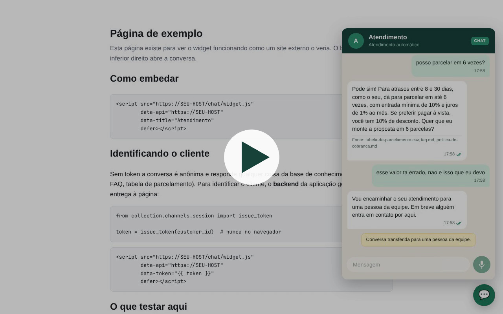
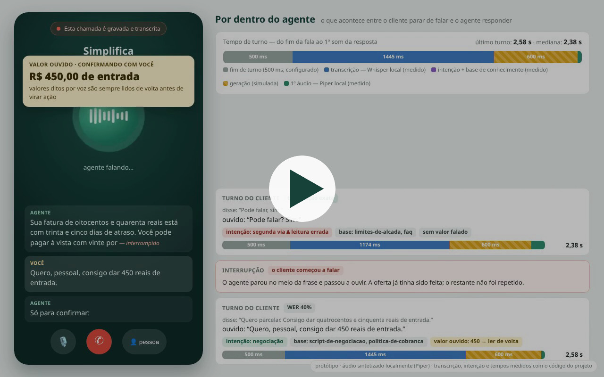
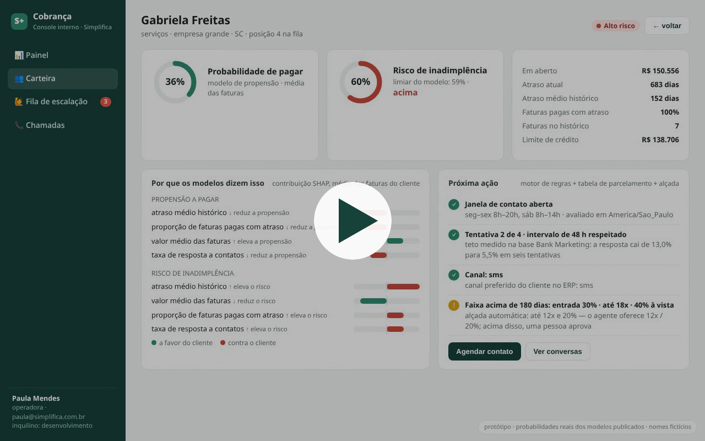

Chat
O sistema puxa a conversa e responde dúvidas
O agente proativo deixa uma mensagem com valor, atraso e condições. Quando o cliente pergunta, a resposta vem da base de conhecimento.


Três agentes, coordenados por um orquestrador central, conduzem a cobrança dentro das regras legais. O cliente conversa por chat (e, em breve, por voz); a equipe acompanha por um console interno.
Funcionando de ponta a ponta. Um widget que qualquer site pode embutir.
O agente proativo deixa uma mensagem com valor, atraso e condições. Quando o cliente pergunta, a resposta vem da base de conhecimento.
Se o cliente contesta o valor, o agente não discute: transfere para a equipe. Se pede para não receber mais mensagens, o pedido é registrado na hora.



Nesta demonstração o texto das respostas foi gerado por um modelo simulado (sem chave de LLM na máquina). Busca na base, intenção, escalação e opt-out são o código real.
Quem vai pagar? Quem vai ficar inadimplente? Dois modelos treinados, avaliados e servidos por uma API.
O campeão é escolhido pela precisão média, não pela acurácia: com 17% de inadimplentes, “ninguém vai inadimplir” já acerta 83% e não diz nada.
| Tarefa | Modelo | Acaso |
|---|---|---|
| Propensão a pagar | 0,85 | 0,69 |
| Inadimplência futura | 0,40 | 0,17 |
| Precisão média no conjunto de teste. XGBoost nas duas tarefas, escolhido entre seis candidatos. Na inadimplência, o modelo multiplica por 2,4 o resultado do acaso. | ||

O histórico de atraso é o que mais pesa no risco. E a taxa de resposta cai de 13% para 5,5% ao longo de seis tentativas, por isso o sistema para na quarta.


Protótipo da próxima entrega. Vozes geradas localmente; transcrição, intenção e tempos medidos com o código do projeto.
O aviso de gravação vem primeiro e não pode ser pulado. Se o cliente interrompe, o agente para de falar.


Um valor ouvido por voz nunca vira ação direto: o agente lê de volta e espera a confirmação. A chamada termina com um acordo dentro dos limites da operação.


Do fim da fala do cliente ao primeiro som da resposta: cerca de 2,5 s. Quase metade é a transcrição.
| Etapa | Tempo | |
|---|---|---|
| Esperar o cliente terminar | 500 ms | configurado |
| Transcrever a fala (Whisper) | ~1.300 ms | medido |
| Entender e consultar a base | ~3 ms | medido |
| Escrever a resposta | 600 ms | simulado |
| Começar a falar (Piper) | 21–101 ms | medido |

Protótipo de tela para a equipe de cobrança, com as probabilidades reais dos modelos para cada cliente.
Cada ponto é um cliente. Os modelos separam a carteira em quatro grupos com comportamentos realmente diferentes.

Ninguém desenhou esses grupos à mão: eles saem das duas probabilidades. O histórico confirma a diferença.
| Grupo | Clientes | Chance de pagar | Risco de inadimplência | Atraso médio no histórico |
|---|---|---|---|---|
| Alto risco | 268 | 32% | 67% | 178 dias |
| Baixa propensão | 45 | 38% | 56% | 113 dias |
| Atenção | 540 | 53% | 43% | 41 dias |
| Bom pagador | 314 | 74% | 21% | 7 dias |
Os bons pagadores ficam fora da fila de cobrança e recebem só lembretes antes do vencimento. A fila de contato é ordenada por risco de inadimplência × valor em aberto.
Para cada cliente, o console mostra o que pesou a favor e contra, e qual é a próxima ação permitida pelas regras.


A fila mostra por que cada conversa foi escalada. A operadora assume, o agente pausa, e só ela pode encerrar.



Versão com voz e console juntos, com cartelas:
preview/2026-11-06-voz-console/video/00-demo-voz-e-console.mp4
| Data | Entrega | Estado |
|---|---|---|
| 05/11 | Chamada de voz em tempo real | protótipo pronto |
| 12/11 | Testes + experimento controlado | testes prontos |
| 19/11 | Resultados consolidados | metade medida |
| 26/11 | Artigo completo revisado | a escrever |
| 03/12 | Versão final e defesa | — |